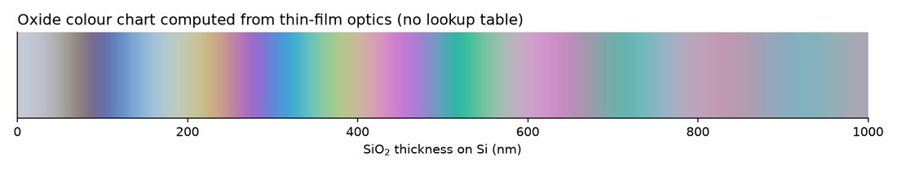
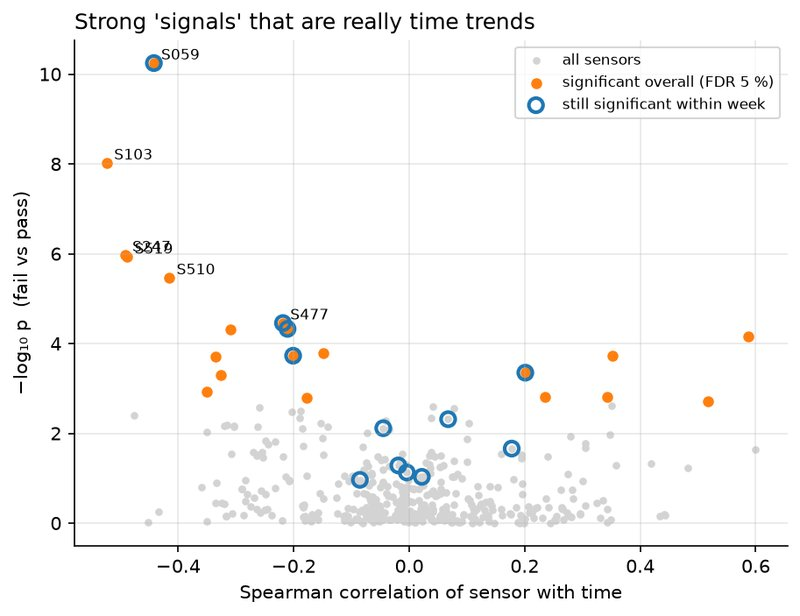
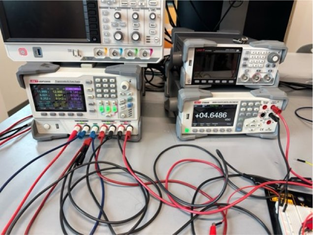
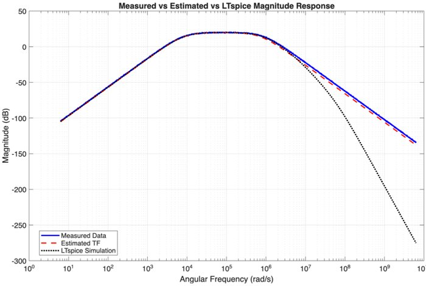

About Me
I am an Electrical Engineering student at Texas State
University pursuing a Bachelor of Science with a focus
on Micro and Nano Devices and Systems.
My engineering interests include semiconductor
technology, analog and digital circuit design,
microelectronics, hardware development, and
engineering research.
I am seeking internships in semiconductor process,
equipment, and yield engineering. My recent projects model
front-end fab steps from first principles and apply statistical
process control to real production data.
Through academic projects, I have gained hands-on
experience designing, simulating, assembling, and
testing electronic circuits using LTspice, KiCad,
oscilloscopes, digital multimeters, and laboratory
power supplies.
3.6
GPA
2028
Expected Graduation
Featured Engineering Projects
Semiconductor process modeling, yield analysis on real fab data,
and circuit design validated on the bench.
Featured · Process modeling
fabsim: Silicon Process Simulator

Python models of front-end fab steps: Deal-Grove oxidation,
predeposition and drive-in diffusion (Crank-Nicolson solver),
ion implantation, and sheet resistance. Run a wafer through a
process traveler to get junction depth, Rs, and oxide thickness.
- Every model validated against published data or analytic
solutions: 32 automated tests run on each commit.
- Computes the oxide colour chart from thin-film optics, matching
the standard chart within ~10 nm.
- Interactive browser furnace: set a recipe, watch the wafer colour change.
Python
Device Physics
Numerical Methods
Testing / CI
Live demo →
Code →
Featured · Yield & SPC
Yield Excursion Analysis on Real Fab Data

SPC and yield analysis of 1,567 production lots and 590 in-line
sensors from a real semiconductor line (UCI SECOM).
- p-chart revealed a yield ramp: fail rate 12.9 % → 4.1 % (p = 2×10⁻⁹).
- Showed 7 of the top 10 "predictive" sensors were time trends;
12 sensors survive a within-week stratified test.
- Demonstrated shuffled cross-validation overstates model
performance (AUC 0.77 → 0.54–0.58 walk-forward).
SPC
Statistics
pandas / scikit-learn
Analysis & code →
4–20 mA Current-Loop Converter
Fall 2025

Designed, built, and bench-tested an LM358 transimpedance
interface converting industrial 4–20 mA sensor signals to 0–5 V.
- Decomposed measured error: −6.0 % gain, −64 mV offset,
only 0.7 % full-scale nonlinearity.
- Showed a two-point calibration cuts error from 7 % to 1.2 % FS.
Op-Amps
Breadboard Prototyping
Error Analysis
Project →
Band-Pass Filter Characterization & Design
Spring 2026

Characterized an unknown part from measured frequency-response data,
fitted a four-pole transfer function, and designed a standard-value
active replacement.
- 20.5 dB peak gain, ±40 dB/dec skirts, 2.4 dB RMS model error.
- Explained high-frequency divergence via op-amp gain-bandwidth.
MATLAB
LTspice
Filter Design
Project →
Regulated DC Power Supply Design
Fall 2025
Designed and optimized a regulated DC power
supply using LTspice to evaluate voltage
regulation, ripple, transient response,
and steady-state performance.
-
Constructed and tested a functional
hardware prototype.
-
Diagnosed noise and stability issues
using laboratory instruments.
-
Developed KiCad schematics, PCB
documentation, and a bill of materials.
LTspice
KiCad
PCB Design
Hardware Testing
Working Circuit Prototype
Fall 2025
Collaborated in a two-person engineering
team to design, assemble, and demonstrate
a functioning electronic circuit.
-
Translated circuit analysis into
soldered hardware implementation.
-
Measured and validated circuit
signals using an oscilloscope
and digital multimeter.
-
Documented troubleshooting findings
and performance results.
Circuit Design
Soldering
Oscilloscope
Teamwork
Wildfire Intervention Study
Controlled Monte Carlo experiment (fixed seeds, 100 runs × 7
options) identifying a crossing-closure plan that cuts simulated
losses by 94 %.
Also critiqued an AI agent's flawed experimental reasoning
(uncontrolled seeds, incomplete comparison).
Python
Simulation
AI Agents
Explore Project Repository →
Digital Fuel Pump System
Modular SystemVerilog datapath (divide, multiply, registered
digit split, seven-segment decoders) verified with a testbench.
Engineering Design
System Development
Documentation
Project →
All Course Projects on GitHub
Professional Experience
Summer Lab Technician
June 2023 – August 2023
North Water District Lab Services
The Woodlands, Texas
-
Processed more than 200 water samples per
day while following laboratory quality-control,
compliance, and standard operating procedures.
-
Maintained accurate labeling, packaging,
inventory documentation, compliance logs,
and traceability records.
-
Supported high-volume laboratory operations
through standardized testing workflows
and documentation practices.
Laboratory Operations
Quality Control
Documentation
Compliance
Technical Skills
Hardware, programming, engineering software,
laboratory instrumentation, and technical tools.
Process & Yield Engineering
Thermal Oxidation (Deal-Grove)
Dopant Diffusion & Implantation Modeling
Sheet Resistance / Four-Point Probe
Statistical Process Control (I-MR, p-charts)
Western Electric Rules
Yield Excursion Analysis
Monte Carlo & Controlled Experiments
Measurement Error Analysis & Calibration
Hardware & Circuit Design
Analog Circuit Design
Digital Circuit Design
Power Supplies
Voltage Regulation
Signal Measurement
Circuit Debugging
PCB Design
Schematic Capture
Hardware Validation & Testing
Programming
Python
C
C++
SystemVerilog
UNIX/Linux
NumPy / SciPy / pandas
scikit-learn
Git & GitHub Actions (CI)
Engineering Software
LTspice
KiCad
MATLAB
AutoCAD
SolidWorks (Certified)
Laboratory Equipment
Oscilloscope
Function Generator
Digital Multimeter
Bench Power Supply
Productivity & Additional Software
Microsoft Excel
Microsoft Word
Microsoft PowerPoint
Google Workspace
Education
Texas State University
2026 – 2028
Bachelor of Science in Electrical Engineering
Concentration:
Micro and Nano Devices and Systems
San Marcos, Texas
Relevant Coursework
Electrical Circuits I & II
Digital Logic
Microelectronics Manufacturing I
Microprocessors
Data Structures
C & C++
UNIX
Database Systems Development
Honors & Certifications
President's List
Spring 2025 & Fall 2025
SolidWorks Certification
SolidWorks certification,
as listed on my engineering resume.
Leadership & Activities
Engineering & Student Organizations
-
Society of Hispanic Professional Engineers
(SHPE) — 2026
-
Robotics Automation Society — 2026
-
Design & Fabrication Club — 2026
-
Data Analytics Club,
Oklahoma State University — 2025–2026
-
Cybersecurity Club,
Oklahoma State University — Spring 2025
-
Rowing Club,
Oklahoma State University — 2024–2025
International Experience
Engineering Study Abroad — Japan
Summer 2026
Participated in an international study-abroad
experience through Oklahoma State University's
School of Engineering.
Japan
Study Abroad
International Experience